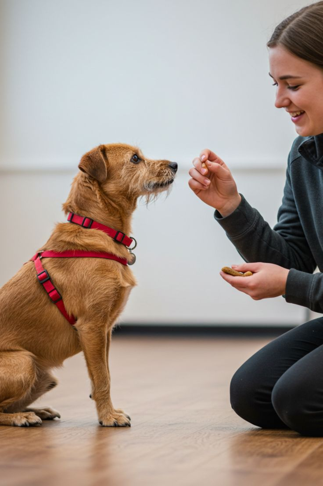

Horarios fijos
Alimentación, paseos y juego siempre a la misma hora.
Hábitos diarios
Establecer rutinas ayuda a tu perro a sentirse seguro, feliz y orientado durante el día.

Alimentación, paseos y juego siempre a la misma hora.
Asegura un lugar cómodo y tranquilo para descansar.
Paseos diarios para ejercicio y estimulación mental.
Mantén una rutina constante cada día.